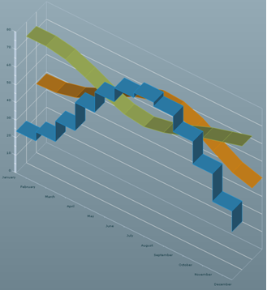

A 3D line chart contains a set of
LineSeries3D classes
that connect to the chart
dataProvider.
The following code shows the creation of a 3D line chart.
<?xml version="1.0" ?>
<mx:Application xmlns:mx="http://www.adobe.com/2006/mxml"
xmlns:ilog="http://www.ilog.com/2007/ilog/flex">
<mx:Script>
<![CDATA[
import mx.collections.ArrayCollection;
[Bindable]
public var temperature:ArrayCollection = new ArrayCollection([
{Month:"January", London:39, Sydney:71.8, Beijing:23.7},
{Month:"February", London:39.6, Sydney:71.8, Beijing:28.8},
{Month:"March", London:42.3, Sydney:69.8, Beijing:40.5},
{Month:"April", London:47.3, Sydney:65.1, Beijing:56.5},
{Month:"May", London:53.4, Sydney:59.5, Beijing:68},
{Month:"June", London:59.4, Sydney:55.2, Beijing:75.9},
{Month:"July", London:62.6, Sydney:53.6, Beijing:78.8},
{Month:"August", London:61.9, Sydney:55.8, Beijing:76.5},
{Month:"September", London:57.6, Sydney:59.5, Beijing:67.6},
{Month:"October", London:50.5, Sydney:63.9, Beijing:54.7},
{Month:"November", London:43.9, Sydney:67.1, Beijing:39},
{Month:"December", London:40.6, Sydney:70.2, Beijing:27.3}]);
]]>
</mx:Script>
<ilog:LineChart3D width="100%" height="100%"
dataProvider="{temperature}" showDataTips="true">
<ilog:horizontalAxis>
<mx:CategoryAxis categoryField="Month"/>
</ilog:horizontalAxis>
<ilog:series>
<ilog:LineSeries3D yField="London" />
<ilog:LineSeries3D yField="Sydney" />
<ilog:LineSeries3D yField="Beijing" form="step"/>
</ilog:series>
</ilog:LineChart3D>
</mx:Application>
The following figure shows how the line chart coded above
is rendered.

Note that the frontmost series is drawn by steps and
not by segments. This feature is provided by the
form style property of the
LineSeries3D class.
The possible values are:
segment:
a direct segment is drawn from one point to another.
step: two
segments are drawn making a step from one point to another.
reverseStep: the steps are formed in reverse.